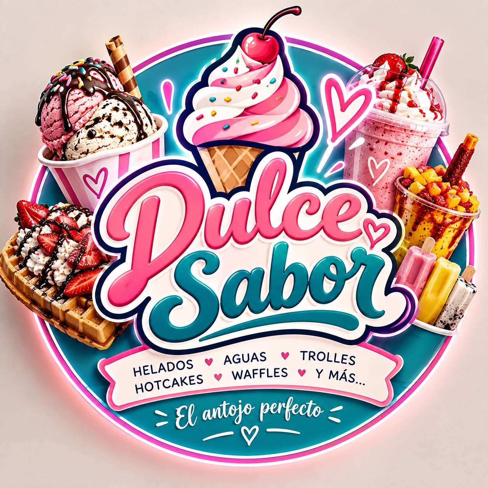

Helados
Cremosos, frescos y listos para llenar de color tu día.
Prueba algo rico ↗PROPUESTA DE PROYECTO · ALTAMIRA
Dulce Sabor: una idea de heladería para disfrutar buenos sabores y compartir momentos en comunidad.

UN LUGAR PARA DISFRUTAR
En Dulce Sabor creemos que las cosas sencillas saben mejor cuando se comparten. Queremos ofrecer productos de calidad, atención amable y un espacio agradable para hacer una pausa y convivir.
Ven con amigos, en familia o por ese antojo que llevas todo el día pensando.
Conoce dónde estamos →01 · LA IDEA
La idea de crear Dulce Sabor surgió a partir de una conversación entre Itzel Cruz y Karen Gaspar sobre qué tipo de negocio podríamos emprender juntas en un futuro. Queríamos encontrar una idea que fuera atractiva para diferentes personas, que pudiéramos comenzar de manera pequeña y que con el tiempo tuviera la posibilidad de crecer. Después de considerar diferentes opciones, pensamos en una heladería, ya que los helados, nieves y otros productos pueden ser consumidos por personas de diferentes edades y permiten ofrecer variedad de sabores y presentaciones.
Además de crear un negocio que genere ingresos, buscamos que nuestro proyecto pueda aportar algo positivo a la sociedad. La situación que queremos mejorar es la falta de espacios pequeños, agradables y accesibles donde las personas puedan convivir y disfrutar de un momento de recreación. Por medio de Dulce Sabor queremos ofrecer un lugar limpio, cómodo y con un ambiente agradable para que familias, amigos y jóvenes puedan reunirse y disfrutar de diferentes productos.
Nuestro proyecto está pensado para poder llevarse a cabo en aproximadamente dos años, por lo que queremos utilizar este tiempo para planearlo, conocer los recursos que necesitaríamos y analizar si puede ser económicamente viable. De esta manera, Dulce Sabor representa no solamente una idea de negocio, sino también una oportunidad para aplicar nuestros conocimientos y crear un proyecto que pueda beneficiar tanto a nosotras como emprendedoras como a las personas que formen parte de nuestra comunidad.
02 · QUIÉNES SOMOS
Somos una heladería dedicada a la elaboración y venta de helados, aguas frescas, troles, waffles, hot cakes y otros postres. Ofrecemos productos de buena calidad y un servicio amable, con un espacio cómodo para que nuestros clientes puedan disfrutar y convivir. También ofrecemos nuestros productos para diferentes tipos de eventos.
Queremos ser una heladería reconocida por nuestros productos y buen servicio, en un ambiente agradable, logrando crecer con el tiempo y tener nuevas sucursales, además de ofrecer nuestros productos en diferentes tipos de eventos.
03 · NUESTROS PRINCIPIOS
Cumplir con las actividades y horarios acordados, realizando el trabajo de manera adecuada y a tiempo.
Manejar de forma transparente el dinero, los productos, las ventas y la información relacionada con la empresa.
Mantener un trato respetuoso entre socias, empleados, proveedores y clientes, evitando la discriminación o el conflicto.
Preparar los productos con ingredientes en buen estado y seguir medidas de higiene para ofrecer productos seguros.
Colaborar y comunicarnos para resolver problemas y cumplir las actividades de la heladería.
Brindar un trato amable, escuchar comentarios y procurar atender las necesidades de nuestros clientes.
Mantener limpia el área de trabajo, los utensilios y equipos antes, durante y después de las actividades.
Evitar desperdiciar alimentos, agua, electricidad y materiales, aprovechando adecuadamente los recursos.
04 · HACIA DÓNDE VAMOS
Posicionar a Dulce Sabor dentro de la comunidad de Altamira, ofreciendo productos de buena calidad y una atención agradable que permita atraer y conservar clientes. Mantener una buena organización de los recursos, controlar los gastos y alcanzar un nivel de ventas que permita cubrir los costos de operación y mantener estable el negocio. Dar a conocer la heladería mediante redes sociales y recomendaciones de nuestros clientes.
Lograr que Dulce Sabor sea una heladería reconocida en Altamira por la calidad de sus productos y el buen servicio. Aumentar la variedad de productos, mantener un crecimiento constante y generar nuevas oportunidades de empleo conforme aumenten las ventas. Reinvertir parte de las ganancias para mejorar el establecimiento y, en un futuro, analizar la posibilidad de ampliar el negocio con otro punto de venta.
05 · LA EMPRESA
Sociedad mercantil. La empresa se constituirá como una Sociedad de Responsabilidad Limitada de Capital Variable (S. de R.L. de C.V.), considerada una persona moral. La responsabilidad de los socios estará limitada a sus aportaciones y el capital podrá aumentar conforme crezca el negocio.
Razón social: Dulce Ola, S. de R.L. de C.V.
Nombre comercial: Dulce Sabor
Dulce Ola tendrá como objeto social la elaboración, preparación, comercialización y venta de helados, aguas frescas, troles, hot cakes, waffles, postres y productos similares para consumo dentro y fuera del establecimiento. La empresa contará con un establecimiento físico con mesas y sillas. También podrá ofrecer sus productos para eventos sociales, familiares, escolares y empresariales, mediante pedidos especiales, carritos o módulos de servicio. Con el crecimiento del negocio, podrá establecer nuevas sucursales y utilizar medios digitales y redes sociales para promocionar y comercializar sus productos.
06 · INVERSIÓN INICIAL
El capital y el financiamiento se destinarán principalmente a la compra de maquinaria para elaborar helados, congeladores, refrigerador, vitrina exhibidora, mobiliario y equipo de cómputo. También se utilizará una parte para adquirir el inventario inicial, realizar adecuaciones al local y contar con dinero disponible para cubrir los primeros gastos de operación de la heladería.
07 · RELACIÓN CON PROVEEDORES
| Técnica | ¿Cómo la aplicaríamos en Dulce Sabor? |
|---|---|
| Anclaje | Comenzaríamos proponiendo un precio que nos convenga al comprar ingredientes en cantidades grandes. |
| Negociación por intereses | Buscaríamos conocer las necesidades del proveedor y las nuestras para llegar a un acuerdo que beneficie a ambas partes. |
| Pregunta abierta | Preguntaríamos si manejan descuentos, promociones o facilidades de pago. |
| Intercambio | Ofreceríamos realizar compras frecuentes a cambio de mejores precios o descuentos. |
| Escucha activa | Prestaríamos atención a las condiciones y propuestas de los proveedores antes de tomar una decisión. |
08 · PROYECCIÓN FINANCIERA
Del 1.º de enero al 31 de diciembre de 2028
| Concepto | Importe |
|---|---|
| Ventas | $1.872.000,00 |
| Costo de ventas | $748.000,00 |
| Utilidad bruta | $1.123.000,00 |
| Gastos de operación | |
| Nóminas | $360.000,00 |
| Gastos de administración | $120.000,00 |
| Gastos de venta/publicidad | $48.000,00 |
| Total de gastos de operación | $528.000,00 |
| EBITDA | $595.000,00 |
| Gastos de financiamiento | $30.000,00 |
| Impuestos | $169.560,00 |
| Utilidad neta | $395.640,00 |
09 · AL 31 DE DICIEMBRE
Dulces Ola S. de R.L. de C.V.
| Activos | |
|---|---|
| Activos circulantes | |
| Caja | $15.000,00 |
| Bancos | $35.000,00 |
| Inventarios | $20.000,00 |
| Activo no circulante | |
| Maquinaria para elaborar helados | $65.000,00 |
| Congeladores y refrigerador | $40.000,00 |
| Vitrina exhibidora | $20.000,00 |
| Mobiliario y equipo | $25.000,00 |
| Equipo de cómputo | $10.000,00 |
| Acondicionamiento del local | $10.000,00 |
| Total activo | $240.000,00 |
| Pasivo | |
| Pasivo a corto plazo | |
| Proveedores | $20.000,00 |
| Cuentas por pagar | $10.000,00 |
| Pasivo a largo plazo | |
| Préstamo para inversión | $50.000,00 |
| Capital | |
| Capital social | $160.000,00 |
| Total pasivo + capital | $240.000,00 |
10 · CAPACIDAD DE PAGO
La liquidez de Dulce Sabor representa la capacidad que tendrá la empresa para cumplir con sus obligaciones de pago a corto plazo. De acuerdo con el Estado de Situación Financiera, contamos con $70,000 en activos circulantes, integrados por caja, bancos e inventarios, y $30,000 en pasivos a corto plazo, correspondientes a proveedores y cuentas por pagar.
Esto significa que por cada peso que la empresa debe a corto plazo, cuenta con $2.33 en activos circulantes para respaldar sus obligaciones. Por lo tanto, Dulce Sabor presenta una capacidad favorable para cubrir sus compromisos a corto plazo, siempre que administre correctamente su dinero y mantenga un buen control de sus gastos.
11 · REFLEXIÓN FINAL
Con la elaboración de este proyecto pudimos desarrollar la idea de crear Dulce Sabor, una heladería que buscamos llevar a cabo en un futuro. A través de este trabajo aprendimos que para iniciar un negocio no solamente se necesita una buena idea, sino también organización, planeación y una buena administración de los recursos.
También comprendimos la importancia de las habilidades gerenciales, como el liderazgo, la comunicación, el trabajo en equipo y la toma de decisiones, ya que nos ayudarán a mantener un buen funcionamiento del negocio. De igual manera, establecimos cómo negociar con nuestros proveedores mediante diferentes técnicas, buscando conseguir precios accesibles, buena calidad y acuerdos que beneficien a ambas partes.
Por otra parte, el análisis financiero nos permitió conocer cuánto dinero necesitaremos para iniciar, en qué se utilizarán los recursos y cuál sería la situación económica de la empresa. Además, mediante el cálculo de liquidez identificamos que Dulce Sabor cuenta con $2.33 por cada peso de deuda a corto plazo, lo que representa una capacidad favorable para cubrir sus obligaciones.
Finalmente, consideramos que este proyecto nos permitió aplicar los conocimientos adquiridos en la materia de Habilidades Gerenciales y comprender mejor la responsabilidad que implica emprender. Esperamos que, con una buena preparación, compromiso y trabajo en equipo, podamos convertir Dulce Sabor en un negocio real, reconocido en Altamira y que ofrezca a las personas un espacio agradable para convivir.
TE GUARDAMOS UN LUGAR
Ven a disfrutar un antojo y quédate por el buen momento.
Altamira, Tamaulipas
La propuesta ubica el proyecto en Altamira.
Pedidos y eventos
Pregunta por opciones para tus reuniones.
Dulce Sabor · El antojo perfecto